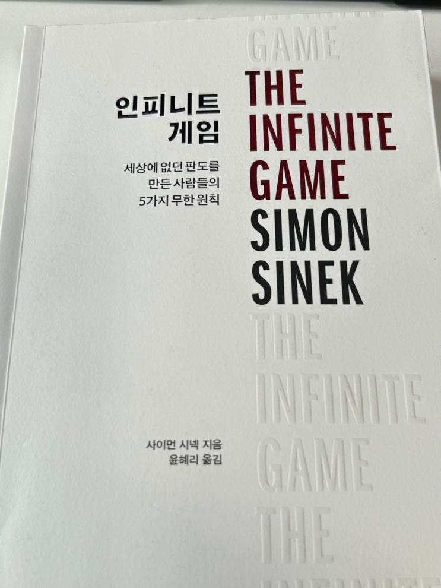

소장 가치 :
10점 만점에 3점 드립니다!

골든 서클로 유명한 사이먼 시넥의 책을 두 번째로 읽어 보았다.
https://youtu.be/qp0HIF3SfI4?si=0NQndoGBPp8j3odq
첫 번째로 읽었던 책은 '리더는 마지막에 먹는다' 라는 책이었는데 아주 좋다고 할 순 없었고 결국 당근에 팔아버렸다.
이번에 두 번째 읽은 '인피니티 게임' 은 유한 게임식 사고와 무한 게임식 사고의 차이점 그리고 그것이 기업의 성공에 미
치는 영향을 다루고 있는데 주요 내용은 아래 동영상에 잘 나온다.
https://www.youtube.com/watch?v=tye525dkfi8
예전에 누군가가 기업의 목적은 수익 추구가 아닌 '장수' 라고 말한 적이 있었는데, 인피니티 게임이 바로 이 '장수'를 추구
하는 마인드 셋이라고 할 수 있다.
책은 여기 나오는 내용에 대해서 좀 더 많은 사례들과 좀 더 많은 말들이 들어가있는 형태이다. 그러다 보니 반복적인 내용
이나 약간 귀에걸면 귀걸이 코에 걸면 코걸이라고 좀 억지로 맞추는거 같은 내용들도 있긴 하다.
책을 사는 것을 그리 추천하지 않고, 위 동영상 한번 보면 대부분 이해할 수 있으리라 본다.
그래도 책에서 찾은 좋은 문구만 아래 몇 개 남겨본다.
유한게임식 리더는 회사의 실적을 사용해 자신이 쌓아온 커리 어의 가치를 증명한다. 무한게임식 리더는 자기
커리어를 사용해 회사의 장기적 가치를 높인다. 금전적 이익은 그 가치 중 일부일 뿐이다. 발머가 은퇴해도 게임
은 끝나지 않는다. 그가 나간 뒤에도 회사는 게임을 계속한다. 무한게임에서 그가 수익을 얼마나 내고 은퇴했는
지는 핵심이 아니다. 은퇴 후 13년이 흐르든, 33년이 흐 르든, 300년이 흐르든 회사가 게임에서 퇴출당하지 않
고 더욱 번 창할 수 있도록 올바른 기업 문화를 정립하고 갔는지가 훨씬 중요 하다. 그리고 그 관점에서 본다면
발머는 패배했다.
p39
즉 프리드먼에 따르면 기업 의 가장 우선적인 목표는 부의 축적이며 그 돈은 주주의 소유다.
이러한 발상은 현대 사회에 뿌리 깊게 박혀 있다. 기업의 소유주 가 이익의 먹이사슬 최상위에 있으며 기업은 오
로지 부를 창출하 기 위해서만 존재한다는 생각이 상식처럼 널리 퍼져 있다. 그래서 수많은 사람이 비즈니스란
원래 늘 이래왔으며, 이 방식이 유일한 선택지고 당연하다고 생각한다. 하지만 그렇지 않았으며 지금도 그렇지
않다.
프리드먼은 비즈니스에 대해 아주 편협하고 평면적인 시각을 가지고 있었다. 그 누구든 한 번이라도 사업을 해
봤거나 직장을 다녀봤거나 기업의 소비자가 된 경험이 있다면 비즈니스가 매우 역동적이며 복잡하다는 사실을
분명히 알 것이다. 그러니까 어쩌 면 우리는 40년이 넘는 지난 세월 동안 기업에 대해 잘못 정의한 채 그 오류를
기반으로 기업을 세워왔을지도 모른다. 그 그릇된 정의는 사실상 기업들을 약화시키고, 자본주의 체제를 지킨다
고 선전하지만 근간까지 흔들고 있다.
p119
코넬대학교 로스쿨 Comell Law school에서 회사법을 가르쳤던 린 스타우트Lymn Stour 교수는 다큐멘터리
시리즈 <익스플레인) Explained에서 이렇게 말 했다. "20세기 중반까지 미국의 기업들은 세계에서 가장 영향
력 있고 효율성이 뛰어나며 수익을 많이 창출하는 조직이었습니다.
당시 기업들은 부자들뿐 아니라 평범한 시민들에게도 투자할 기 회를 줬고 좋은 수익률을 가져다줬죠. 기업의
임원들은 자기 자신 을 주주외에도 채권자, 협력 업체, 직원, 지역사회를 위해 일하는 관리인으로 여겼어요.” 하
지만 1970년에 프리드먼의 기고문이 발 표된 후로 임원들은 스스로를 더 위대한 가치를 추구하는 기업의 관리
인으로 생각하지 않고 기업의 소유주',즉 주주들에게 책임 을 다하는 사람으로 인식하기 시작했다. 1980년대와
1990년대에 이러한 사상이 만연해지며 기업과 은행의 성과급 제도는 점점 더 단기 성과에 집중했고 점점 더 소
수의 사람에게만 이익을 몰아주 는 쪽으로 변했다. 또한 이 시기부터 임의로 정한 목표를 달성하 기 위해 매년
감행하는 대규모 정리 해고가 하나의 괜찮은 전략으 로 받아들여지기 시작했다. 1980년대 이전에는 그런 관행
이 존재 하지 않았다. 당시에는 한 회사에서 평생 일하는 사람이 아주 흔했다.
p122
위의 수행 능력 대 신뢰도 그래프에서 왼쪽 아래의 '수행 능력 하 신뢰도 하'는 당연히 아무도 선택하지 않는다.
누구라도 오른쪽 위의 '수행 능력 상 신뢰도 상'을 채용할 것이다. 네이비실이 깨달 은 특이점은 왼쪽 위의 '수행
능력 상 신뢰도 하'인 사람이 특공대 원으로 부적절하다는 사실이었다. 이들은 자아도취적 성향을 보 이고, 이기
적이고, 남을 탓하거나 욕하고, 다른 부대원들, 특히 신 입이나 계급이 낮은 대원들에게 부정적인 영향을 미치는
경우가 많다. 그래서 네이비실은 '수행 능력 상 신뢰도 하'보다는 '수행 능 력 중 신뢰도 상'을 선발하며, 심지어
'수행 능력 하 신뢰도 상을 뽑는 일도 있다(상중하는 상대적 척도다). 세계에서 가장 뛰어난 특 수부대인 네이비
실에서도 능력이나 성과보다 신뢰도를 우선시하 는데, 왜 비즈니스에서는 아직도 성과를 더 중요하게 생각할
까?
p174